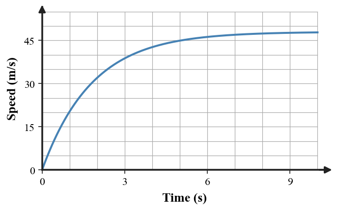
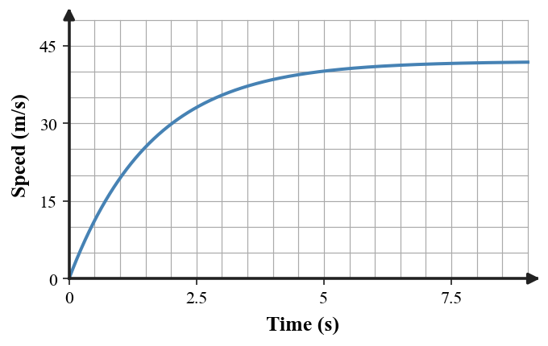
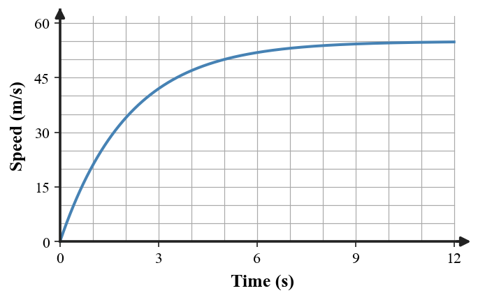

“At terminal speed, gravity stops acting, so the skydiver no longer accelerates.”
Critique the claim. Explain what happens to weight, air resistance, net force, acceleration, and downward velocity at terminal speed.
Use the force model for a falling object.
A student says the upward arrow means the object must begin moving upward. Explain why the force model instead can represent downward motion at terminal speed.
The graph shows the speed of a falling object.

“The flat part proves gravity has disappeared.”
Use the graph and a force explanation to critique the statement.
Explain the cause-and-effect sequence from the beginning of the fall to terminal speed. Include how the net force changes.
Two students interpret this graph.

A: “Acceleration becomes zero because the forces balance.”
B: “Acceleration becomes zero because gravity turns off.”
Choose the stronger explanation and use both the graph and force reasoning to defend it.
A: “Terminal speed means the object stops.”
B: “Terminal speed means the object continues at constant speed because net force is zero.”
Evaluate both statements and explain which quantities are zero and which are not.
A falling object has 90 N weight downward and 90 N air resistance upward.
The object is already moving downward. Explain why it keeps moving even though acceleration is zero, and identify the misconception in saying “balanced forces stop motion.”
Use the speed-time evidence.

Write a corrected explanation for: “The object reaches terminal speed because the downward force gets smaller until it is zero.” Your correction must identify which force changes most as speed increases.